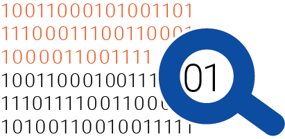

Bijdragen aan informatica
Dijkstra heeft in zijn carriëre een bijzonder grote bijdrage geleverd aan de informatica, zowel in het aantal als in de omvang van zijn bijdragen. Zijn wetenschappelijke bijdrage bedraagt ruim 1.300 publicaties. Daaronder vallen ook zijn beroemde EWD's. Dit waren documenten die hij voor zichzelf schreef, maar vrij beschikbaar stelde. Fotokopieën daarvan vonden hun weg over de wereld en tegenwoordig zijn vele van deze handgeschreven teksten gescand. Van veel EWD's zijn transcripties beschikbaar in het E.W.Dijkstra archive van de universiteit van Texas.Dijkstra behandelt compilerbouw, ontwerp van besturingssystemen, ontwerp van programmeertalen en algoritmiek, maar zijn grootste bijdrage aan het vakgebied betrof ongetwijfeld de wiskundige fundamenten van de informatica. Met name daarvoor vond Dijkstra samen met zijn studenten in 1962 enorme inspiratie in een publicatie over predicatencalculus van Tony Hoare. Met deze axiomatische basis voor de ontwikkeling van computerprogramma's heeft Dijkstra richting gegeven aan de gehele informatica en het vakgebied verheven van een aanmodder-gebeuren tot een echte wetenschap. Dijkstra wordt dan ook beschouwd als een van de echte vaders van de informatica en als een directe opvolger van mensen als Alan Turing.